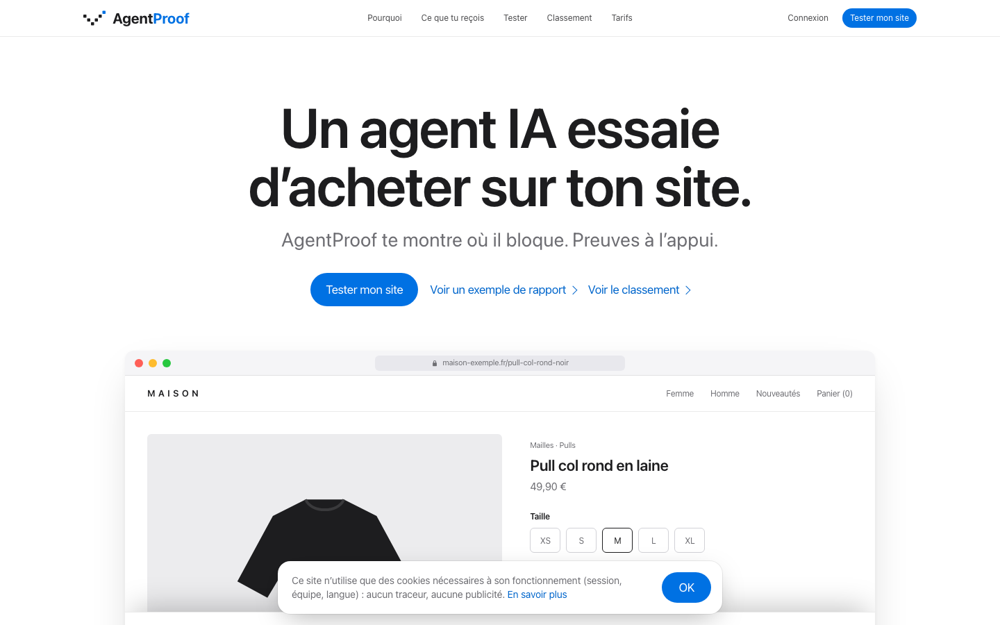
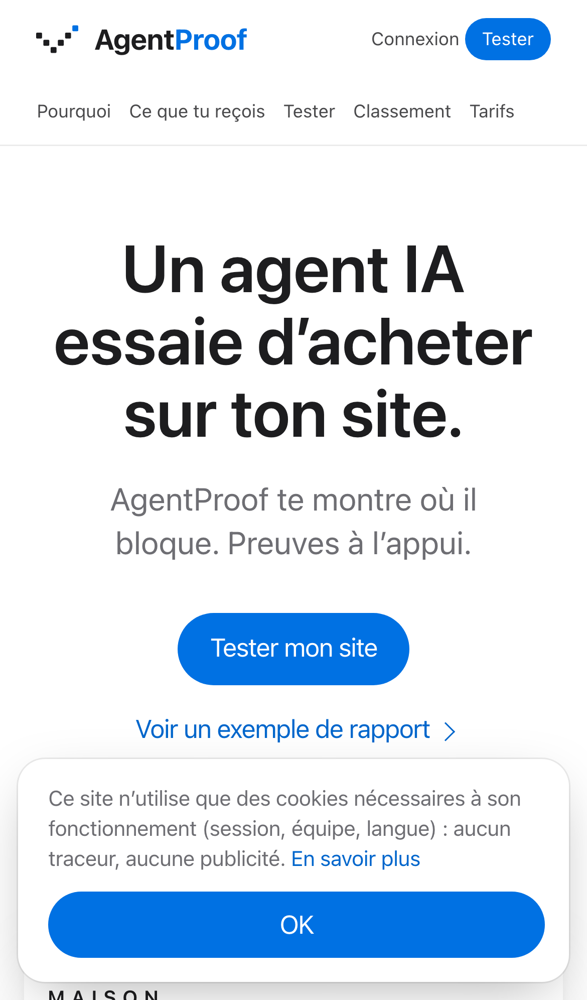

100 visiteurs ont testé votre page
https://agentproof-iota-tawny.vercel.app/ · but : lancer un audit de son site (formulaire « Teste ton site », gratuit pour l'instant) · public : responsables e-commerce, fondateurs de marques de mode en ligne et agences e-commerce en France · 19/11/2026 12:47:10
Visiteurs simulés par l'IA à partir de captures réelles de la page (ordinateur et mobile). Un premier filtre pour repérer les problèmes évidents, à confirmer avec de vrais utilisateurs.
Où ils cliqueraient

Après défilement : Lancer l’audit ×4 · Tout le classement ×1 · Nous contacter ×1

Après défilement : Lancer l’audit ×3
Ce qu'ils regardent en premier
Ce que personne n'a compris
« Un agent IA sur mon site… pour quoi faire ? » : le bénéfice n'est pas dit
Confondu avec un audit SEO ou un outil de conversion « classique »
Hors mode, ils pensent que ce n'est pas pour eux
Ce que tout le monde a raté
Le bandeau cookies gêne la lecture
Il masque 21 % du haut de page sur mobile et reste collé en bas de chaque écran ; plusieurs visiteurs notent l'ironie pour un outil qui dénonce justement les bandeaux cookies.
Ils ne savent pas si c'est gratuit ni ce qui se passe après le clic
La gratuité n'est écrite qu'en petit sous les tarifs ; « Tester mon site » ne dit pas que c'est gratuit, sans compte, et qu'il faut juste une URL et un e-mail.
Ils veulent la méthode et des preuves avant de donner leur site
Quel agent, combien d'essais, comment le score est calculé ; le lien Méthode est en pied de page et le classement affiche 5 sites à 100 %, ce que 5 visiteurs jugent peu crédible.
Les 5 trucs à corriger ce soir
- Remplacer le titreimpact fortH1 : « Vérifie qu'un agent IA peut acheter sur ta boutique. » ; sous-titre : « Cookies, pop-up, sélecteur de taille : on te montre où il bloque, captures à l'appui, et quoi corriger. Gratuit, aucun achat réel. »Sur les mêmes 30 visiteurs, compréhension en 5 s : 80 % contre 50 % avec le titre actuel (+30 pts). À surveiller : « restent » passe de 80 % à 70 %, et l'échantillon contenait volontairement beaucoup de visiteurs qui n'avaient pas compris.
- Rendre le bandeau cookies discretimpact fortSur mobile, le réduire à une ligne (texte + « OK ») ou le supprimer : tu n'utilises que des cookies nécessaires, qui ne demandent pas de consentement.Il masque 21 % du haut de page mobile et 23 visiteurs sur 100 s'en plaignent, sur un site qui vend justement la détection de ces blocages.
- Dire « gratuit » et « ce qui se passe » sous le boutonimpact fortSous « Tester mon site », une ligne : « Gratuit · sans carte · ton URL + ton e-mail · rapport en 10 à 20 min ».10 visiteurs hésitent sur le prix ou sur ce qui suit le clic ; seuls 18 % passeraient à l'action.
- Rassurer sur la sécurité dès le haut de pageimpact moyenAjouter 3 garanties sous les boutons : « Aucun paiement, aucune commande », « Aucune donnée saisie », « Agent identifiable (user-agent publié) », avec un lien vers Méthode.11 visiteurs craignent un vrai achat, des fausses commandes ou des stats faussées ; c'est le frein n° 1 des responsables techniques.
- Rendre la méthode et le classement crédiblesimpact moyenAjouter « Méthode » dans le menu du haut, et dans le classement afficher le nombre total de sites testés et quelques sites qui échouent, pas seulement cinq 100 %.16 visiteurs demandent la méthode (quel agent, combien d'essais, quel score) ; 5 trouvent un top 5 à 100 % peu crédible.
Titres testés
| Variante | n | Compris en 5 s | Restent |
|---|---|---|---|
| Titre actuel | 30 | 50 % | 80 % |
| Les agents IA vont acheter à la place de tes clients. Ton site est-il prêt ? AgentProof lance un agent IA sur ta boutique, sans rien payer, et te montre où il bloque avant que tu perdes la vente. Test gratuit. | 30 | 67 % | 60 % |
| Ton site e-commerce perd-il les ventes des agents IA ? Un agent IA essaie d'acheter chez toi, sans payer. Tu vois où il bloque, preuves à l'appui, et quoi corriger. Gratuit. | 30 | 77 % | 67 % |
| Vérifie qu'un agent IA peut acheter sur ta boutique. Cookies, pop-up, sélecteur de taille : on te montre où il bloque, captures à l'appui, et quoi corriger. Gratuit, aucun achat réel. | 30 | 80 % | 70 % |
Par profil
| n | Compris en 5 s | Restent | Trouvent le bouton | Hésitent ou bloquent | Passeraient à l'action | |
|---|---|---|---|---|---|---|
| Ordinateur | 50 | 80 % | 90 % | 66 % | 64 % | 22 % |
| Mobile | 50 | 72 % | 84 % | 70 % | 66 % | 14 % |
| Public visé | 60 | 87 % | 97 % | 92 % | 62 % | 28 % |
| Proches | 25 | 92 % | 100 % | 40 % | 88 % | 4 % |
| Hors cible | 15 | 7 % | 27 % | 20 % | 40 % | 0 % |
Vérifications techniques
- Mobile : la bannière cookies masque 21 % du haut de page
Chargement : ordinateur 849 ms (contenu principal 448 ms), mobile 545 ms.
Ils ont dit
« OK c'est exactement mon sujet, mais je lance un truc sur mon site sans savoir si c'est gratuit ? »
Maxime, 44 ans, responsable e-commerce d'une marque de prêt-à-porter · mobile
« Je veux bien essayer, mais montrez-moi d'abord à quoi ressemble le résultat. »
Paul, 40 ans, responsable e-commerce d'une marque de prêt-à-porter · mobile
« C'est joli, la capture avec le bandeau cookies, mais ça me coûte combien en chiffre d'affaires ? »
Théo, 28 ans, responsable e-commerce d'une marque de prêt-à-porter · mobile
« Je ne comprends pas ce que ça fait, c'est un truc pour les développeurs, non ? »
Antoine, 35 ans, responsable e-commerce d'une marque de prêt-à-porter · mobile · n'a pas compris
« Si c'est gratuit je teste, mais je ne vois nulle part si ça l'est. »
Florian, 44 ans, responsable e-commerce d'une marque de prêt-à-porter · mobile
« Je regarde comment ils notent avant de le recommander ; le positionnement est malin. »
Guillaume, 49 ans, consultant SEO indépendant · mobile
« Sympa comme idée, mais j'ai pas de boutique à tester, je regarde juste. »
Hugo, 36 ans, développeur freelance · mobile
« Cinq sites à 100 %, ça ne discrimine rien, je veux voir la méthode avant de croire au score. »
Jérôme, 48 ans, consultant SEO indépendant · mobile
Généré par le skill Claude Code « visiteurs » · github.com/achillebrl/skills-ia